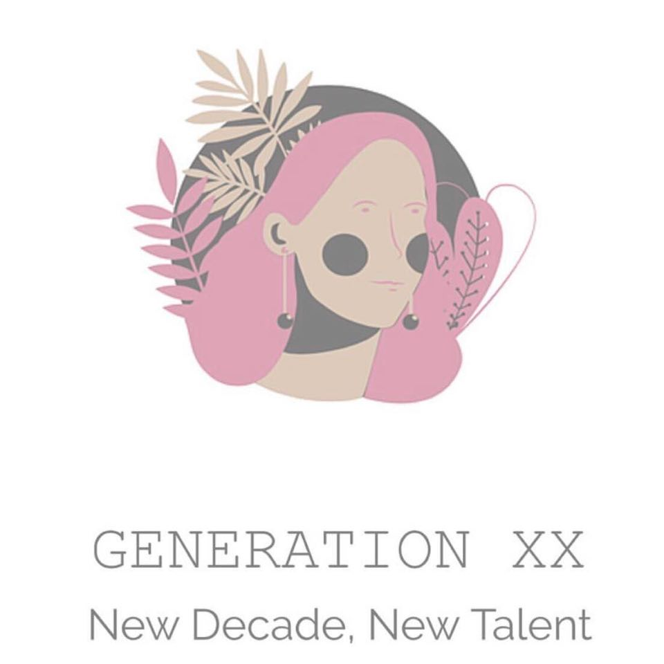

Final Major Project

For my Final Major Project, I took on the task of organising Solent University’s Graduate Fashion Show for 2020 with a partner.
As part of the Summer Shows for the School of Art, Design and Fashion a fashion show is held on the opening night of the exhibition, giving a more immersive experience for guests and giving the Fashion Design students a professional platform to showcase their graduate collections. Bringing together students, lecturers, family, friends and industry specialists, the show is the highlight of the year for many – a challenge I was excited yet nervous to take on. We created our own PR agency to assist us with the task - Baker & Butler Events.
Due to the current global situation, the fashion show was cancelled. We still wanted to have our platform to showcase the fashion students, so decided to move our show online and produce a digital fashion show instead.
Alongside this, we created a fully integrated online platform through our social media channels (Instagram and YouTube), published a digital interactive brochure and maintained a collaborative blog page, engaging and establishing the fashion community at Solent and further.
My role in this focused on organisation, client liaison and content creation, whereas my partner looked at the more visual aspects, creating graphics and layouts that fit our brand.